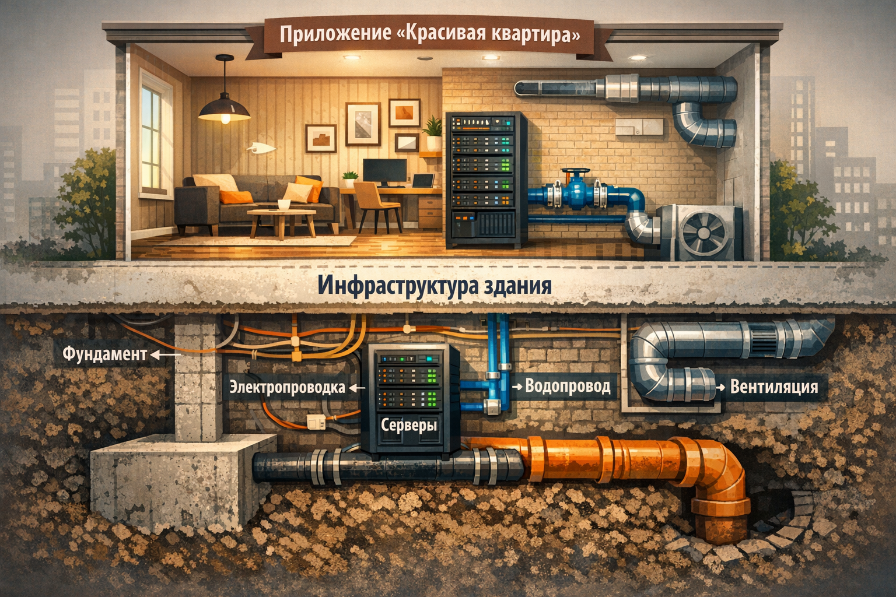
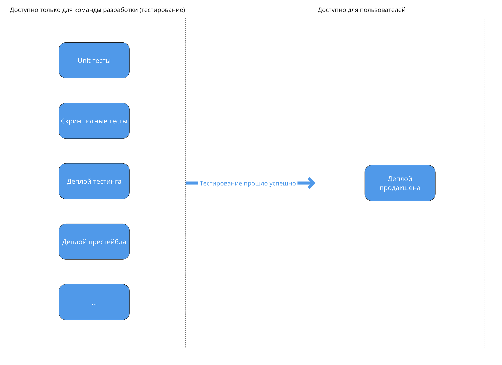
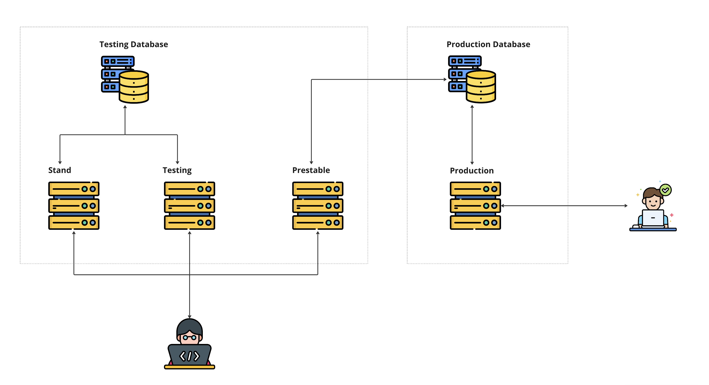

Илья Степанов
Инфраструктура - комплекс взаимосвязанных обслуживающих структур или объектов, составляющих и обеспечивающих основу функционирования системы
https://ru.wikipedia.org/wiki/Инфраструктура
Инфраструктура - набор инструментов, которые позволяют нам доставлять наше приложение пользователям, проверять его, организовывать совместную разработку

fix: исправление бага
feat: новая функциональность
build: изменения системы сборки
chore: обновление зависимостей
ci: изменение CI/CD конфигурации
docs: только документация
style: форматирование, без логики
refactor: рефакторинг без новых фич
perf: улучшение производительности
test: добавление тестовfeat: create base page and serve it
fix: resolve login form validation bug
ci: add eslint check to PR pipelineDocker - программное обеспечение для автоматизации развёртывания и управления приложениями в средах с поддержкой контейнеризации
Docker позволяет упаковывать приложение со всеми зависимостями и легко запускать его на разных машинах
Образ (Image)
Шаблон - исполняемый пакет со всем необходимым: кодом, средой выполнения, библиотеками, переменными окружения
Как рецепт блюда
Контейнер (Container)
Запущенный экземпляр образа - изолированная среда, в которой работает приложение
Как готовое блюдо из рецепта
Docker Registry представляет собой удалённую платформу, используемую для хранения образов Docker
Docker Hub - самый крупный реестр образов Docker, используется по умолчанию
Аналог: npm registry для JS-пакетов
docker build . -t my-app:1.0.0 # Собрать образ
docker run -p 3000:3000 my-app:1.0.0 # Запустить контейнер
docker ps # Список запущенных контейнеров
docker stop {CONTAINER_ID} # Остановить контейнерFROM - базовый родительский образENV - постоянные переменные средыRUN - выполнить команду и создать слой образаCOPY - скопировать файлы в контейнерWORKDIR - рабочая директорияEXPOSE - открыть портCMD - команда запуска контейнераFROM node:20-alpine # Базовый образ
WORKDIR /app # Рабочая директория
COPY package*.json ./ # Копируем манифест
RUN npm ci # Устанавливаем зависимости
COPY . . # Копируем исходники
RUN npm run build # Собираем приложение
CMD ["node", "server.js"] # Команда запускаОдин контейнер — один процесс. Но реальное приложение состоит из нескольких сервисов
Docker Compose — инструмент для запуска группы контейнеров одной командой
services:
frontend:
build: ./frontend
ports:
- "80:80"
depends_on:
- backend
backend:
build: ./backend
ports:
- "3000:3000"
environment:
- DATABASE_URL=postgres://db/app
db:
image: postgres:16
volumes:
- db-data:/var/lib/postgresql/data
volumes:
db-data:docker compose up — поднять все сервисыdocker compose up --build — пересобрать образы и запустить
docker compose down — остановить и удалить контейнерыdocker compose logs -f — следить за логами в реальном времени
{
"scripts": {
"start": "node .",
"dev": "vite",
"build": "vite build",
"test": "jest",
"lint": "eslint src/",
"typecheck": "tsc --noEmit"
}
}MAJOR.MINOR.PATCH
1.0.1
1.1.0
2.0.0
npm version patch # 1.0.0 —> 1.0.1
npm version minor # 1.0.0 —> 1.1.0
npm version major # 1.0.0 —> 2.0.0Автоматически создаёт git-тег и коммит
{
"scripts": {
"preversion": "npm test",
"version": "npm run build && git add -A dist",
"postversion": "git push && git push --tags"
}
}Выполняются
автоматически до, во время и после npm version


Continuous Integration - автоматическая проверка каждого изменения кода
Continuous Delivery - автоматизированная выкладка проверенного кода
name: CI
on: [push, pull_request]
jobs:
check:
runs-on: ubuntu-latest
steps:
- uses: actions/checkout@v4
- uses: actions/setup-node@v4
with: { node-version: 20 }
- run: npm ci
- run: npm run lint
- run: npm test
- run: npm run build# .gitlab-ci.yml
image: node:20
stages:
- check
cache:
paths:
- node_modules/
check:
stage: check
script:
- npm ci
- npm run lint
- npm test
- npm run build
rules:
- if: $CI_PIPELINE_SOURCE == "push"// Jenkinsfile
pipeline {
agent { docker { image 'node:20' } }
stages {
stage('Install') {
steps { sh 'npm ci' }
}
stage('Lint') {
steps { sh 'npm run lint' }
}
stage('Test') {
steps { sh 'npm test' }
}
stage('Build') {
steps { sh 'npm run build' }
}
}
}| GitHub Actions | GitLab CI | Jenkins | |
|---|---|---|---|
| Хостинг | Облако (GitHub) | Облако / self-hosted | Только self-hosted |
| Конфиг | YAML в .github/ |
YAML .gitlab-ci.yml |
Jenkinsfile |
| Порог входа | Низкий | Низкий | Высокий |
| Экосистема | Marketplace actions | Встроенные шаблоны | 1000+ плагинов |
| Бесплатно | 2000 мин/мес | 400 мин/мес | Бесплатно (свой сервер) |
| Когда выбрать | Проект на GitHub | Проект на GitLab | Сложная корпоративная инфраструктура |